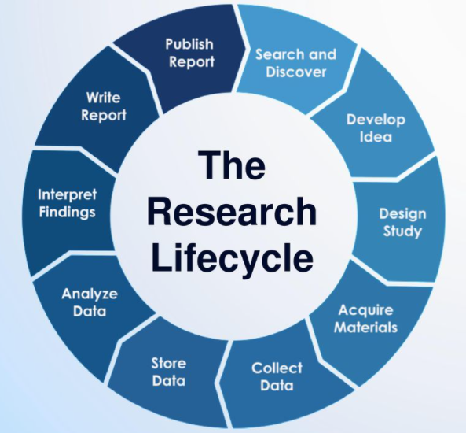

Before jumping into this training series, I think it is important to get a feel for the role of data management within the larger research team and how a research team functions cohesively. With that in mind, I wanted to briefly cover common research team roles as well as tools that help teams communicate and manage tasks. Sometimes a research team may be lucky enough to have all of these roles, other times, just one person, such as the Principal Investigator, may take on all or multiple of these roles.
The Principal Investigator/s or PIs, as well as Co-PIs, are the individuals who prepare and submit the grant proposal and are responsible for the administration of that grant. There are often more than on PI on a project including at least someone with content area knowledge as well as a methodologist. PIs and Co-PIs have varying levels of involvement in research projects and are typically, not always, more hands off in the day to day administration. Even if some tasks are delegated to other research staff, PIs and Co-PIs are ultimately responsible for IRB submissions and for meeting IRB requirements, as well as for submitting MOUs, budgets, effort reporting, continuing review reports and any final technical finding reports.
Source: University of Pittsburgh and University of Massachusetts Amherst
The project coordinator is an essential member of the research team. As the name implies, this person typically coordinates all research activities. This can include things such as recruitment and consenting of participants, creation of data collection materials, creation of protocols, training data collectors, data collection scheduling, data tracking, and more. The project coordinator may also supervise many of the other research team roles, such as research assistants. This role may be split across more than one project coordinator as well.
The data manager is also an essential member of the team. This person (or persons) is responsible for the organizing, cleaning, documenting, storing, and dissemination of research project data. It is also advisable to include this person in beginning stages of a research study to assist in things such as the design of data collection materials. They can often be helpful in problem solving and alleviating future potential problem areas with data collection. Last, a data manager may also be the person who builds tools such as tracking databases, forms, or surveys.
Although the term may not always be research assistant, I am referring to any staff hired to help implement a research project. Research assistants are typically out in the field, collecting the data, or they may also assist in other areas such as preparing data collection materials or assisting with data management. Some advanced research assistants may also assist in implementing training or acting as data collection leads in the field. In academic settings, research assistants may be graduate students or full time staff, while outside of academia these roles are typically entry-level or junior staff.
Some teams may include additional roles such as postdocs, research associates/fellows, administrative professionals, hourly data collectors, outreach coordinators, coaches, or consultants, all who may assist in the research cycle in other ways. The size of a research team and the roles that exist are all dependent on factors such as funding, the type of research study/the intervention being studied, or the organization of your specific research institution.
When considering the research project life cycle (Center for Open Science), oftentimes data managers are not brought in to the project until the “storing data” phase, which typically includes cleaning data to prepare it for future analysis. However, ideally the data manager, whoever has that role, would be involved as early as the design study phase. In the design study phase, the data manager can help design the data management plan. Then during the acquiring materials phase, it’s crucial to have a data manager involved when building data collection and data tracking tools. A data manager can help the team to forwardly think about the final data use cases ahead to ensure data is collected efficiently, reliably, and securely, and also ensure that key pieces of data are not left out. This phase is also a perfect time to begin data documentation, best created as a collaboration between the implementation team and the data manager/s. During the data collection phase, the data manager can help trouble shoot data issues as they occur. As the data begins rolling in, the data manager is then front and center during the data cleaning and storage phase, ensuring data is prepped for analysis, stored securely, and ready for sharing.

While the data manager role may not be heavily involved in the implementation of the research study activities, they are still intertwined in the process and are in frequent communication and planning with all members of the team. There are several tools/software that teams can use to facilitate project coordination and communications. Many times the software your team uses/has access to will be dependent on contracts that your university/organization has and on what your IT team has deemed secure. However, I still think it is worth briefly reviewing tools teams might consider or come across.
When it comes to project management, there are tools that may help a team assign and track tasks, schedule meetings, or track project timelines. Without endorsing any particular product or software, some project/task management tools that I know education research teams have used include:
When it comes to communication tools (video and/or instant message functioning), the purpose of these tools can vary. Sometimes you need instant responses (especially when issues arise in the field during data collection), other times you need to have longer planning meetings, other times you may want to keep records of conversations. Different communication tools meet different needs. Again, without endorsing any particular form of communication, tools that teams often use include:
Education Data Chat has a great podcast episode on methods of communication that I highly recommend.